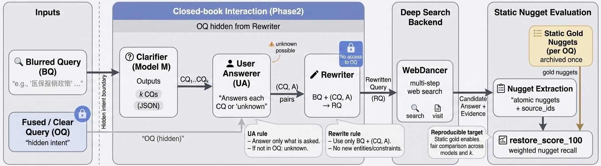

Unzip, set your judge endpoint (Qianfan OpenAI-compatible), and run evaluation. The judge computes nugget coverage (full/partial/none) and outputs per-item and summary stats.
# 1) unzip
unzip clarify-then-search-518-release.zip
cd release
# 2) env (Qianfan OpenAI-compatible)
export QIANFAN_API_KEY="YOUR_KEY"
# optional:
export QIANFAN_BASE_URL="https://qianfan.baidubce.com/v2"
export EVAL_MODEL_NAME="ernie-4.5-turbo-128k"
# 3) run one candidate
python ./code/eval_gold.py \
--gold_a data/gold_public_hard518.jsonl \
--gold_b results/candidates/ebk1__cand_hard518.jsonl \
--out_dir outputs/ebk1Core artifacts needed to evaluate any model against the static golden nuggets.
release/
data/
hard_518_queries.csv
gold_public_hard518.jsonl
results/
candidates/
clarify_only/
code/
eval_gold.py
make_candidate.py
prepare_public_eval.pyClarify-Then-Search: A Clarification Benchmark for Deep Search with End-to-End Nugget Restoration evaluates whether LLM clarification improves downstream deep search under a closed-book protocol.
Replace the paper button with the ACM Digital Library, OpenReview, or arXiv link when available.
The benchmark contains 518 information-seeking queries selected to be underspecified, where clarification is expected to provide high utility.
Each instance has an intent query fused_query and an underspecified query blurred_query.
Under a closed-book protocol, a system observes only blurred_query, asks k clarification questions, receives constrained answers,
rewrites to q̂, and is evaluated by running a fixed deep-search backend on q̂ and scoring nugget restoration against a static gold built from fused_query.
Why no supervised “gold” clarification labels? We evaluate whether the model asks for information that is answerable under the hidden intent and useful for downstream deep search, avoiding a single canonical clarification target.
We provide a static golden reference per intent query (JSONL). Each gold record contains weighted nuggets and traceability fields. At evaluation time, a candidate answer is scored by weighted nugget recall with partial credit: full=1, partial=0.5, none=0.
restore_score_100 = 100 * ( sum_j w_j * s(cov_j) ) / ( sum_j w_j )
s(full)=1, s(partial)=0.5, s(none)=0
Only gold.nuggets are required by eval_gold.py for scoring; other fields are included for debugging and analysis.
Below is a compact summary table for one-turn clarification results reported in the paper.
| System | k | mean | p50 | p90 |
|---|---|---|---|---|
| orig | – | 19.434 | 20.454 | 35.294 |
| Qwen3-235B-A22B-Instruct | 1 | 22.527 | 19.565 | 47.211 |
| ERNIE-4.5-Turbo-128K | 1 | 23.460 | 20.000 | 50.000 |
| DeepSeek-3.2 | 1 | 23.234 | 21.053 | 48.416 |
| Kimi-K2-Instruct | 1 | 22.687 | 20.000 | 46.236 |
| GPT-5.2 | 1 | 26.474 | 25.000 | 50.000 |
| Claude-Sonnet-4.5 | 1 | 25.911 | 23.333 | 52.996 |
| Gemini-2.5-Pro | 1 | 25.874 | 21.429 | 52.996 |
Please cite our paper if you use the benchmark, code, or evaluation artifacts.
@inproceedings{huang2026clarifythensearch,
title = {Clarify-Then-Search: A Clarification Benchmark for Deep Search with End-to-End Nugget Restoration},
author = {Huang, Deqiang and Zhou, Jingbo and Lu, Xinjiang and Xu, Tong and Wu, Hua and Chen, Enhong},
booktitle = {Proceedings of the 32nd ACM SIGKDD Conference on Knowledge Discovery and Data Mining},
year = {2026}
}Code: MIT License (see LICENSE)
Data: CC BY 4.0 (see DATA_LICENSE)
This release includes model-generated outputs and automatically judged scores. Provided answers may contain errors.